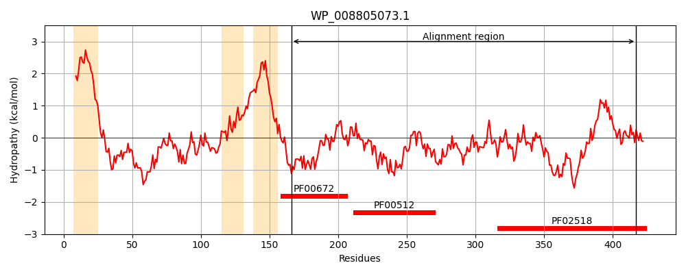
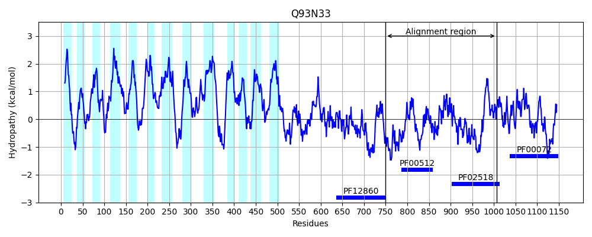
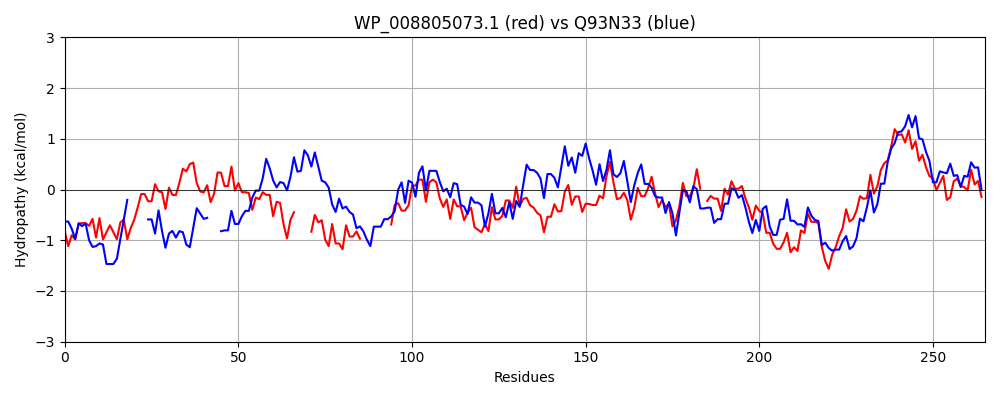

Hit Accession: Q93N33
Hit TCID: 2.A.21.9.2
Hit Description: gnl|BL_ORD_ID|17326 gnl|TC-DB|Q93N33|2.A.21.9.2 Proline sensor PrlS - Aeromonas hydrophila.
Mach Len: 265
e:0.000000
Query TMS Count : 3
Hit TMS Count: 13
TMS-Overlap Score: 0.000000
Predicted Substrates:CHEBI:26271;proline
BLAST Alignment:
Score: 201 , Bit scores: 82 bits, E-value: 1.3e-16, Alignment length: 265, Percentage identity: 26
Query: 166 RIETAAQRFGEGHFSERIHFDSMSSFERLGVAFNQMADNINALIASKKQLIDGIAHELRTPLVRLRY----RLEMSENLTEAESQA--------LNRDIGQLEALIEELLTYARLDRPQTELSLTTPDFPAWISDHVEDIQMVNPQREVALATLTHGNYGALDMRLMERVLDNLVNNALRYSTQ-RVAVSLTLQGPRASLQVEDDGPGIAPEERERVFEPFVRLDPSRDRATGGCGLGLAIVHSIAQAMGGDVRCEASPLGGARF 417
R+ A E +ER H R + NQ + N SK + + ++H+L PL + LEM + AE +A ++ +G E LI +LL +RL+ + + + + ++ ++ + + D+RL+ RVL N + NA RY+ RV + G + ++V D+GPGI +++E +F+ F RLD SR G GLGLAI I+ +G + + P G+ F
Sbjct: 750 RVLREANEHLEARVAERTH-----ELNRQLLLVNQQVERANH---SKSRFLAAVSHDLTQPLNAAKLFTSSLLEMLPGVQGAEQRAEQVRIARHIDDALGATEDLITDLLDISRLEAGKFKAKKLDFALREVFDNLKAEFGVLAQAGDIQFSVVESKLAVYSDVRLLRRVLQNFLTNAFRYNPGGRVLLGCRRLGDKVRIEVWDNGPGIPLDKQEAIFDEFSRLDHSRTAREQGLGLGLAIARGISLVLGHPLSLRSWPQAGSVF 1006 | Protein Hydropathy Plots: |
|---|
|  |  |
Pairwise Alignment-Hydropathy Plot:
|
|---|
|  |